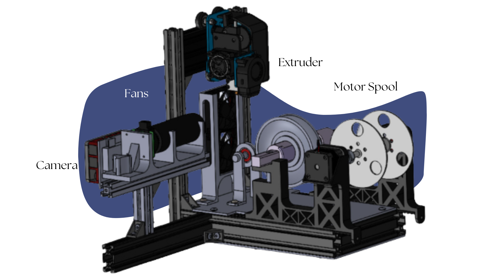

AIFred2 Chat with me
Subir Archivo CSV
Arrastra tu archivo CSV de Datos aquí
o haz clic para seleccionar

Chat con tus Datos
¡Hola! Sube un CSV con los datos de funcionamiento y haz preguntas.
Por ejemplo: “¿Cuántas filas hay?” o “¿Cuál es el promedio de temperatura?”
Enviar